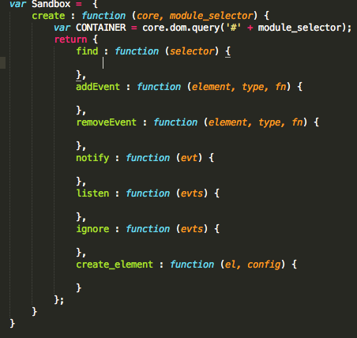
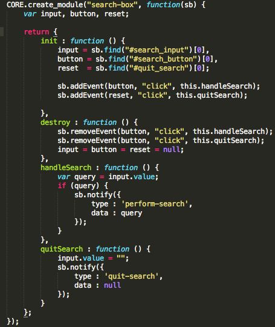
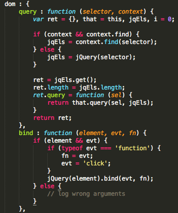
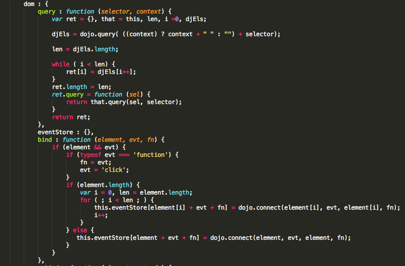
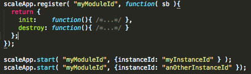

JS Scalable application.
Widget based development.
Common tools
What is popular now?
jQuery
Backbone
YUI
Module
web application module (n)
an independent unit of functionality that is part of the total structure of a web application
Module
- Hands to yourself
- Only call your own methods or those on the sandbox
- Don’t access DOM elements outside of your box
- Don’t access non-native global objects
- Ask, don’t take
- Anything else you need, ask the sandbox
- Don’t leave your toys around
- Don’t create global objects
- Don’t talk to strangers
- Don’t directly reference other modules
Sandbox
- It provides consistency
- It provides security – Determine which parts of the framework a module can access
- It provides communication – Translate module requests into core actions
Aplication core Jobs
- Manage module lifecycle
- Tell modules when to start and stop doing their job
- Enable inter-module communication
- Allow loose coupling between modules that are related to one another
- General error handling
- Detect, trap, and report errors in the system
- Be extensible
- The first three jobs are not enough
Base libraries
- Browser normalization
- Abstract away differences in browsers with common interface
- General-purpose utilities
- Parsers/serialises for XML, JSON, etc.
- Object manipulation
- DOM manipulation
- Ajax communication
- Provide low-level extensibility
Finally
- Only the base library knows which browser is being used
- Only the application core knows which base library is being used
- Only the sandbox knows which application core is being used.
- Each module knows nothing except that the sandbox exists.
- And finally no single part of the web application knows about the web application.
Simple realization sandbox

Simple realization module

Replacing base library jQuery

Replacing base library Dojo

Aura js
Aura gives you complete control of a widget's lifecycle, allowing developers to dynamically start, stop, reload and clean-up parts of their application as needed.
Aura js structure
Application Core
The Sandbox
Widgets
Modules
Principal structure
-- js/aura
-- js/ext
-- js/widgets
app.js
Aura mediator
mediator.start(channel, el) e.g mediator.start('calendar', '#calendarapp')
mediator.stop(channel, el) e.g mediator.stop('calendar', #calendarapp')
mediator.unload(channel) e.g mediator.unload('calendar')
mediator.publish(channel)
mediator.subscribe(channel, callback, context)
Aura sandbox
- facade.start(channel, el)
- facade.stop(channel, el)
- facade.publish(channel)
- facade.subscribe(subscriber, channel, callback)
- facade.dom.find(selector, context)
- facade.events.listen(context,events,selector,callback)
- facade.mvc.View
- facade.mvc.Model
- facade.mvc.Collection
- facade.widgets.start(channel, el)
- facade.widgets.stop(channel, el)
Aura sandbox
Unit testingDocumentation
Kernel JS
- The modules are loosely coupled. They don't communicate with each other directly.
- Your hub is the messaging bus. You can also give it an api.
- Kernel provides lifecycle management. It can also abstract a base library.
Kernel JS core
Kernel.extend
Kernel.register
Kernel.start
Kernel.unregister
Kernel JS hub
Kernel.define
Kernel.register
Kernel.listen
Kernel.broadcast
Kernel JS module
Kernel.define
Kernel.isStarted
Kernel.get
ScaleApp start module

ScaleApp start module
sb.publish( "myEventTopic", myData, callback );
sub1 = sb.subscribe( "somthingHappend", messageHandler );
ScaleApp plugins
i18n - Multi language UIs
mvc - very simple MVC
permission - controll all messages
util - some helper functions